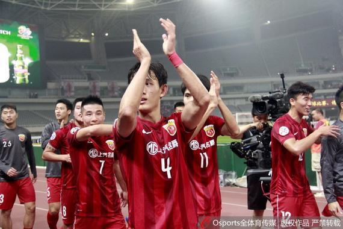

标准盒模型
怪异盒模型
分栏
 新浪体育讯 5月24日，亚冠联赛打响16强淘汰赛的第二回合比赛，上海上港队主场1-0击败日本东京FC队，以客场进球多的优势挺进亚冠八强。远在悉尼的山东鲁能队也一直通过网络关注着本场比赛的进展，鲁能高层一直坚信上港一定能够赢球，并且表示只要参加亚冠的球队都是代表中国足球为国争光。对于鲁能来说，明天这场比赛只有一个字：拼。 山东鲁能队的战前最后一练安排在当地时间晚上7点半，训练结束全队用过晚餐之后刚好上港队的比赛开始。在比赛刚一开始，鲁能俱乐部总经理孙华就给出自己的预测：这场比赛上港队一定能赢，比分有可能是2-0。 比赛的进程打得非常焦灼，直到下半时上港队也未能破得门。对此几位观战的鲁能高层也表示：上港只要按照这个节奏打下去一定能够进球。直到比赛来到下半时第43分钟的时候，不少人都对上港有些失去信心的时候，鲁能总经理孙华仍然表示：比赛还没有结束，上港肯定还有机会。
垂直居中水平居中
弹性盒模型(新)+排序
弹性盒模型(旧)
弹性盒子水平分栏